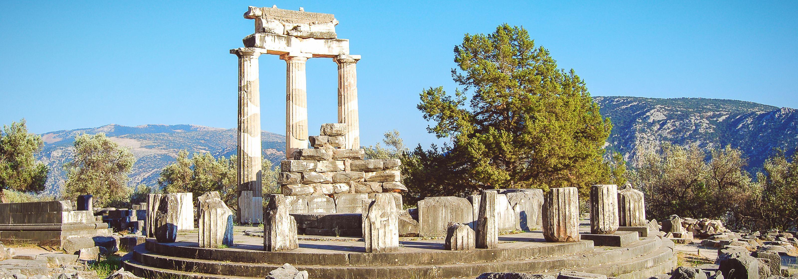

Historia de las Olimpiadas

Un origen antiguo y sagrado
Las Olimpiadas son un evento deportivo internacional que se celebra cada cuatro años y reúne a atletas de todo el mundo para competir en diferentes modalidades deportivas. El origen de las Olimpiadas se remonta a la Antigua Grecia, en el año 776 a.C.
Los antiguos griegos celebraban festivales religiosos en honor a sus dioses, y uno de ellos era el festival en honor a Zeus, el dios supremo del Olimpo. Este festival se llevaba a cabo en la ciudad de Olimpia, en el Peloponeso, y consistía en diversos rituales, ofrendas y competencias deportivas.
Las competencias deportivas eran una parte esencial del festival y consistían en carreras de velocidad, carreras dea distancia, lucha, boxeo, lanzamiento de disco y jabalina, entre otras. Estas competencias reunían a atletas de diferentes ciudades-estado de la Antigua Grecia y se celebraban en el estadio de Olimpia, que podía albergar a más de 40.000 espectadores.
En la antigua Grecia, los ganadores de los Juegos Olímpicos eran considerados héroes y adquirían gran prestigio la sociedad. Los ganadores recibían medallas de olivo y se les otorgaban los derechos civiles y políticos en sus ciudades-estados. Los Juegos Olímpicos antiguos también permitían a los atletas contar sus hazañas frente a sus compatriotas y mantener vivas las tradiciones y culturas.
Las Olimpiadas se celebraron durante más de mil años en la Antigua Grecia, hasta que fueron prohibidas por el emperador romano Teodosio en el año 393 d.C. Esto se debió a que el cristianismo se había establecido como la religión oficial del Imperio Romano y consideraba las prácticas religiosas de la Antigua Grecia como paganas.
Un atractivo moderno
Las Olimpiadas volvieron a celebrarse en la época moderna, gracias al esfuerzo del barón Pierre de Coubertin. En 1896, se celebró la primera edición de los Juegos Olímpicos modernos en Atenas, Grecia, y desde entonces se han celebrado cada cuatro años en diferentes ciudades del mundo.
Más allá de los deportes, las Olimpiadas también son un símbolo de la unidad y la cooperación global. Los atletas de todo el mundo se reúnen bajo una misma bandera y comparten su amor por el deporte, superando las barreras culturales y lingüísticas que a veces pueden dividir nuestras sociedades.
Juegos de invierno
Estos juegos incluyen deportes de invierno tanto de hielo como de nieve, como el esquí de fondo, el patinaje de velocidad, el patinaje artístico, el hockey sobre hielo, el bobsleigh, la combinada nórdica y los saltos de esquí.
La primera edición de los Juegos Olímpicos de Invierno se celebró en Chamonix, Francia, en 1924. Desde entonces, los juegos han crecido en popularidad y se han añadido nuevos deportes como el luge, el patinaje de velocidad sobre pista corta, el curling y el esquí acrobático.